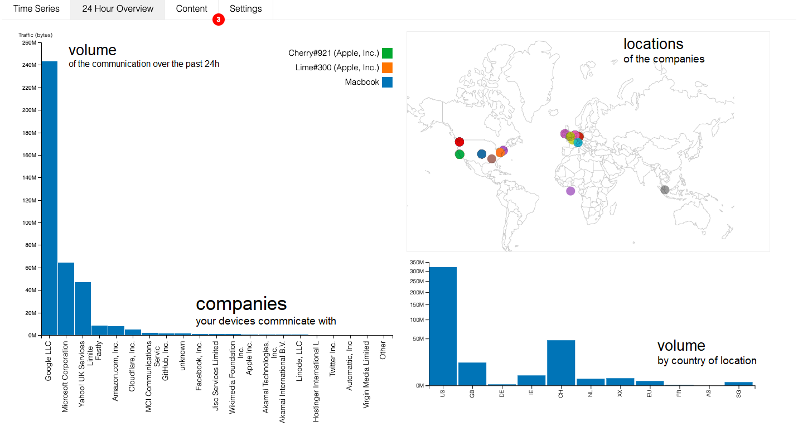

What's the most interesting thing you've found out using the prototype so far? (200 characters)
By now you probably have plugged in a number of different devices, and you've seen how the privacy assistant interface shows data flows from connected devices.
You can also click on company names in the time series to learn more about them, and the overview tab will let you see where the companies are located around the world.
It's probably become apparent that many devices are sending data to more than one company. Maybe you've been wondering why that is the case, and how the receiving companies might use that data.
Over the next few weeks, these sessions will show a little more about how smart home devices work, how data is collected and transferred, and how that data might be used.
Great, all done! Check back soon for more.